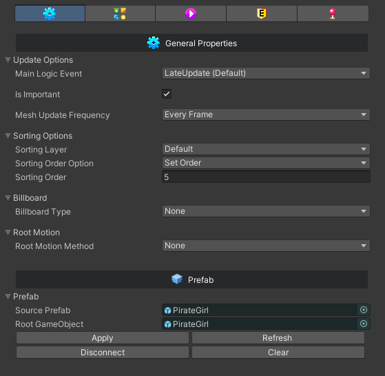
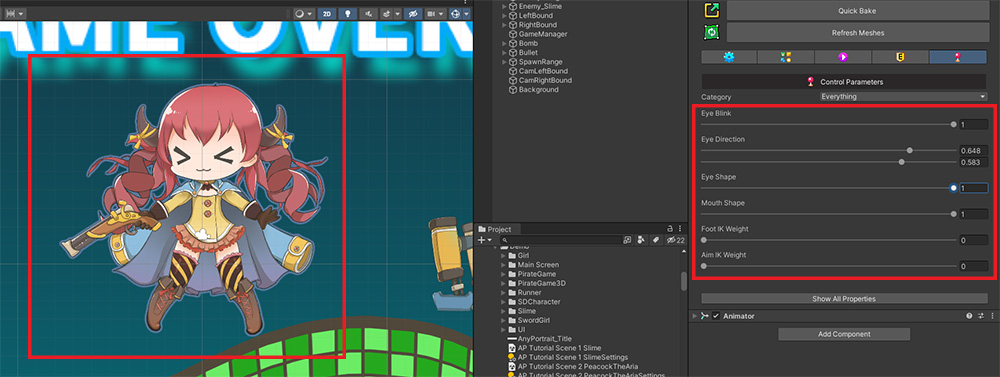

AnyPortrait > 메뉴얼 > 인스펙터 UI
인스펙터 UI
1.4.8

유니티 에디터에서 AnyPortrait로 만든 apPortrait 오브젝트를 선택하면, 인스펙터(Inspector)에 그 정보가 나타납니다.
이 페이지에서는 인스펙터의 화면 구성에 대해서 설명합니다.

인스펙터의 기본 화면 구성은 위와 같습니다.
1. Open Editor : 에디터를 열고 바로 현재 오브젝트를 편집할 수 있도록 선택합니다. (Optimized Bake된 경우 에디터를 열 수는 있지만 편집은 불가능합니다.)
2. Quick Bake : 바로 Bake를 합니다.
3. Refresh Meshes : Bake된 캐릭터의 메시들을 갱신합니다.
4. 탭 : 종류에 따른 속성 UI를 전환하여 볼 수 있습니다.
5. 속성들 : 선택된 탭에 맞게 세부 속성들이 보여집니다.
6. Show All Properties : apPortrait의 모든 프로퍼티를 열어서 확인할 수 있습니다. (데이터가 많으므로 에디터의 성능이 느려질 수 있습니다. 개발자용입니다.)

첫번째 탭에서는 기본 속성 및 프리팹과 관련된 속성이 나타납니다.
1. Update Options : 업데이트와 관련된 옵션들입니다.
- Main Logic Event : apPortrait를 업데이트하는 메인 로직이 호출되는 이벤트를 설정합니다. (관련 페이지)
- Is Important : 캐릭터의 중요도에 따라 매프레임 또는 간헐적으로 업데이트됩니다. (관련 페이지)
- Mesh Update Frequency : 낮은 FPS으로 애니메이션을 재생하는 옵션입니다. (관련 페이지)
2. Sorting Options : 렌더링 순서에 관한 옵션을 설정합니다. (관련 페이지)
3. Billboard : 빌보드 옵션을 이용하여 3D 레벨에서 렌더링할 수 있습니다. (관련 페이지)
4. Root Motion : 애니메이션에서의 위치를 Transform에 적용하는 옵션입니다. (관련 페이지)
5. Prefab : 만약 해당 객체가 프리팹인 경우 이 속성이 추가로 보여집니다. 프리팹과의 연결 상태를 확인하고 제어할 수 있습니다. (관련 페이지)

두번째 탭에서는 참조할 수 있는 하위 객체들이 리스트 형식으로 보여집니다.
1. Root Portraits : 루트 유닛들이 나타납니다.
2. Images : 이미지들이 보여지며, 클립보드로 이름들을 복사할 수 있습니다.
3. Sockets : 메시나 본의 소켓들이 모두 보여집니다. 해당 Transform을 찾거나 이름을 복사할 수 있습니다.

세번째 탭에서는 애니메이션 클립 리스트와 메카님 및 타임라인과 관련된 설정들이 나타납니다.
1. Animation Settings : 애니메이션 리스트가 나타납니다. 자동 실행 애니메이션 앞에는 "A" 아이콘이 표시되며, 이름들을 복사하거나 미리보기를 할 수 있습니다.
2. Mecanim Settings : 메카님을 이용할 경우 필요한 설정들입니다. (관련 페이지)
3. Timeline Settings : 유니티의 타임라인과 연동할 경우 이용되는 설정들입니다. (관련 페이지)

네번째 탭은 애니메이션 이벤트와 관련된 설정들이 나타납니다.
애니메이션 이벤트 UI에 대한 설명에 대해서는 관련 페이지를 참고해주세요.

다섯번째 탭에서는 컨트롤 파라미터들을 볼 수 있습니다.
여기서 컨트롤 파라미터를 조작하여 바로 유니티 에디터에서 캐릭터가 어떻게 움직이는지 확인하는 것이 가능합니다.
애니메이션을 유니티 에디터에서 미리보기

애니메이션 탭을 선택한 상태에서 애니메이션을 슬라이더를 이용하여 미리볼 수 있습니다.
(1) 미리보고자 하는 애니메이션의 "재생" 버튼을 누릅니다.
(2) 애니메이션 미리보기 슬라이더가 나타납니다.
(3) 슬라이더를 움직이면 해당 프레임에 맞는 애니메이션이 연산되어 유니티 에디터에 보여집니다. 미리보기가 종료하고자 한다면 해당 애니메이션의 "중지" 버튼을 다시 누르면 됩니다.
애니메이션 미리보기는 다음의 제한점이 있으므로 참고하시길 바랍니다.
- 클리핑 메시 렌더링은 동작하지 않습니다.
- 애니메이션이 실시간으로 재생되지 않습니다.
- 빌보드 옵션이 켜져있다면, 캐릭터 렌더링이 이상하게 보여질 수 있습니다.
컨트롤 파라미터 결과를 유니티 에디터에서 미리보기

컨트롤 파라미터 탭을 선택한 상태에서 컨트롤 파라미터를 조작하면 위와 같이 캐릭터에 반영이 됩니다.
컨트롤 파라미터가 애니메이션 또는 외부의 스크립트에 의해 제어되지 않는 한, 게임 실행 중에도 인스펙터로 조작하는 것이 가능합니다.